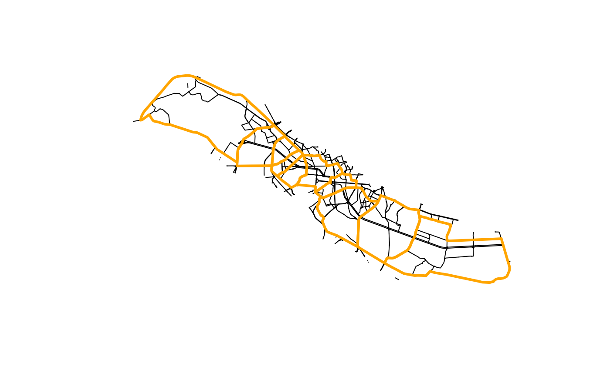

6. Corridor segmentation
Source:vignettes/vig_06-corridor-segmentation.Rmd
vig_06-corridor-segmentation.Rmd
library(rcrisp)
#> Warning in check_cache(): Cache dir: /home/runner/.cache/R/rcrisp - size: 8 MB - oldest file from: 2025-08-21.
#> Clean up files older than 30 days with: `rcrisp::clear_cache('2025-07-22')` (or remove all cached files with: `rcrisp::clear_cache()`.
library(sf)
#> Linking to GEOS 3.12.1, GDAL 3.8.4, PROJ 9.4.0; sf_use_s2() is TRUE
bucharest_osm <- get_osm_example_data()
bucharest_dem <- get_dem_example_data()
if (any(is.null(bucharest_osm), is.null(bucharest_dem))) {
cat("NOTE: Example data was not found; ",
"subsequent code chunks will be skipped.\n", sep = "")
knitr::opts_chunk$set(eval = FALSE)
}For a more detailed analysis of an urban river corridor, corridor-level delineation may not be sufficient. The corridor needs to be subdivided into smaller morphological units. Segmentation is a process of subdividing the corridor by using major transversal road or rail infrastructure lines.
By default, the all-in-one function delineate() only
returns the corridor boundary. The corridor can be segmented either by
setting the argument segments = TRUE in
delineate() or by using the
delineate_segments() function in a separate step.
To demonstrate this as a separate step, we will use the
bucharest_dambovita$corridor from the package data, as well
as bucharest_osm$streets and
bucharest_osm$railways from rcrisp example data as
input.
We first prepare the network and select all the streets and railways
that cover the river corridor plus a small buffer region (see also
vignette("network-preparation")):
# Add a buffer region around the corridor
corridor_buffer <- sf::st_buffer(bucharest_dambovita$corridor, 500)
# Filter the streets and railwayas to the buffer area
streets <- bucharest_osm$streets |>
sf::st_filter(corridor_buffer, .predicate = sf::st_covered_by)
railways <- bucharest_osm$railways |>
sf::st_filter(corridor_buffer, .predicate = sf::st_covered_by)
# Build combined street and railway network
network_filtered <- rbind(streets, railways) |>
as_network()We then delineate segments in the corridor. The algorithm spits the corridor using river-crossing transversal edges that form continuous lines in the network:
segmented_corridor <-
delineate_segments(bucharest_dambovita$corridor,
network_filtered,
st_geometry(bucharest_osm$river_centerline))
plot(st_geometry(streets))
plot(segmented_corridor, border = "orange", lwd = 3, add = TRUE)